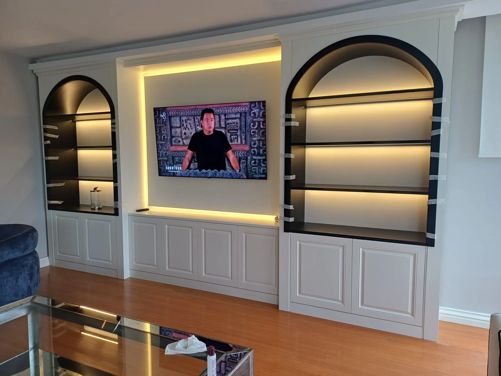

Работите ли по проекти извън Турция?
Да. Оценяваме проекти на Балканите според местоположението, обхвата, производството, транспорта и монтажа.
Öder Mimarlık проектира и координира мебели по поръчка, кухни, подови настилки, търговски пространства и щандове за панаири.
Да. Оценяваме проекти на Балканите според местоположението, обхвата, производството, транспорта и монтажа.
Изпратете държава, приблизителна площ, желана услуга, референтни снимки и желана дата.
Интериорна архитектура, мебели по поръчка, кухни, подови настилки, жилищни пространства и текстилни изложбени щандове.
Öder Mimarlık проектира и координира мебели по поръчка, кухни, подови настилки, търговски пространства и щандове за панаири.
Създайте лично концептуално табло от снимка на стаята си и стил, който харесвате. Снимката остава в този браузър.
Снимката за вдъхновение не напуска вашето устройство.
Това е първоначално концептуално табло, което задава визуален стил и посока на материалите; то не е прерисувана с изкуствен интелект версия на снимката ви, нито проект за изпълнение.
Öder Mimarlık проектира и координира мебели по поръчка, кухни, подови настилки, търговски пространства и щандове за панаири.

01Жилищни пространства, които съчетават уют, цветове и малките детайли, които са ваши.
 02
02Умно съхранение, добри материали и изчистени линии.
 03
03Нека изберем текстура и тон в хармония с цялото пространство.
 04
04Весели и функционални стаи, които оставят място за израстване.
 05
05Започва там, където питате: „Възможно ли е нещо такова?“
Оглед, концепция, материали и дизайн, съобразен с пространството.
Първо ви изслушваме. После заедно откриваме разпределението, текстурите и цветовете, които пасват на ежедневието ви. Резултатът: пространство, което не само изглежда добре, но и в което се чувствате добре.
Да се запознаем ↗Дизайн, който добавяВсеки проект е нова история. На какво място иска да живее вашата история?


Снимките са избрани от архива ни от обекти. Надписите описват показаното пространство; не съдържат информация за проекти или клиенти.
Гледайте детайли от изпълнението на мебели за магазини, шоуруми, кухни и съхранение, всеки под заглавието на съответното пространство.
Отворени сме за работа с мебелни марки, хипермаркети за строителни стоки и търговски екипи по продукти по поръчка, витрини, мебели за магазини и повторяеми интериорни решения.
Bauhaus, IKEA ve benzeri markaların satın alma, kategori ve mağaza tasarım ekipleri; hedef ürün grubu, adet, teknik şartname ve teslimat bölgesini paylaşarak ön görüşme talep edebilir.
Започнете корпоративен разговор за оферта ↗Изберете вида на проекта, площта, предпочитания материал и държавата на изпълнение. Подгответе обхвата за секунди и го добавете към предварителното си запитване.
Предварителният диапазон се изчислява според категорията на проекта, избраното качество и коефициента на държавата. Тази автоматична оценка не замества огледа и официалната оферта.
Показаният ценови диапазон е приблизителна оценка въз основа на посочените единични цени за m² и коефициенти; огледът, транспортът, данъците, монтажът и условията на доставка могат да променят окончателната оферта.
Нека заедно оценим интериорните ви проекти в Турция и Европа. Споделете местоположението и обхвата на проекта и ще обсъдим подходящия за вас начин на работа.
Опознаваме нуждите, вкуса, местоположението и приоритетите ви.
Заедно уточняваме обхвата, дизайнерския подход и следващите стъпки.
Изпълняваме договореното решение в рамките на определения обхват и процес.
Имате въпроси за проекта си? Опишете го накратко в първото си съобщение и ще го разгледаме заедно.
Работим по интериорна архитектура и дизайн на пространства, мебели и декорация, кухни и шкафове по мярка, подови настилки, обзавеждане на хол, всекидневна и детска стая, както и по специални проекти. Обхватът на проекта ви уточняваме на първата среща.
Разглеждаме запитванията ви за проекти в Турция и Европа. Споделете местоположението, обхвата на проекта и нужната услуга и заедно ще обсъдим подходящ начин на работа.
Оценката се изчислява като площ × единична цена за категорията × коефициент за качество × коефициент за държавата. За екстремни проекти над 100 m² се добавя 10% консултантска такса. Резултатът е приблизителен диапазон; окончателната оферта се определя след преглед на размерите и обхвата.
Местоположението на проекта, пространството или стаята, която имате предвид, желаната промяна, приблизителните срокове и снимки за вдъхновение са добро начало. Ако имате бюджет, посочването му помага да оформим предложението правилно.
Според нуждите може да се обсъди подкрепа, насочена към дизайна, или работа, обхващаща дизайн и изпълнение. Обхватът и подходящата услуга се уточняват на първата среща.
Опишете накратко местоположението, размера и нуждите на проекта си. След преглед на информацията ще ви представим обхвата и процеса за оферта.
Разкажете ни какво си представяте. В първия разговор ще обсъдим нуждите на проекта и възможните следващи стъпки.